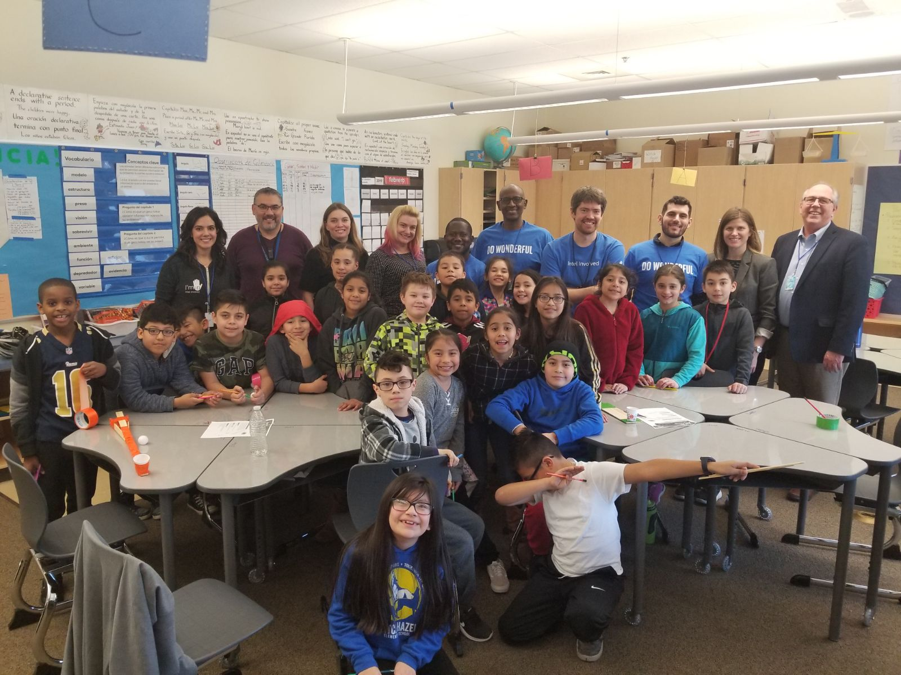

Volunteering
“If you need me I'll be stage right / praying the whole world will start embracing stage fright.” –Lecrae, in
Background
Who am I to spend my time with, Lord? If any in particular, I'm am quite fine with spending all of my free time with them, and really dedicating myself to understanding their problems and attempting to find the best way out for them. (O Lord, change this biased white male engineer)
Lord, do you care about any of the “progress” here on Earth other than bringing people to yourself? If not, quickly transform my whole mind into the way you see things, because people here have a much different view of things.
Julia recommends doing
Servant Partners.
Great intro PDF … read after you “figure out” God stuff?
Teaching would be interesting. Not sure whether STEM or other potentially more important things.

Elevate Oregon
Show up. Consistently. Be an adult role model that cares about kids / the future.
Provide a counter-example to the world they know and grow up in.
You can push on kids to do the right thing.
Discussion with DCG black guy after presentation
There will be students that you can't reach. You did what you could
Some will be super motivated and just lack simple things like a laptop, maybe even food. It's easy to enable them!
Others have potential and need encouragement, maybe some accountability. They can blossom too.
Travel
Actually, it looks like it would be deductible (and thus eligible for matching by Intel), as long as you're “working” for most of the time. https://www.nolo.com/legal-encyclopedia/can-you-deduct-expenses-volunteering-charity.html
Travel expenses are one of the most common deductions by volunteers. These include:
• air, rail, and bus transportation
• car expenses where travel is done by car
• taxi fares or other costs of transportation between the airport or station and hotel
• lodging costs, and
• the cost of meals.
Example: Betty is a troop leader for a tax-exempt youth group and helps take the group on a camping trip. Betty is responsible for overseeing the setup of the camp and for providing adult supervision for other activities during the entire trip. Betty participated in the activities of the group and enjoyed her time with them. She oversaw the breaking of camp and helped transport the group home. Betty can deduct her travel expenses.
Donations
It's ok to receive something personally for what you gave, but the fair market value is not deductible.
Todo: See what Intel's policy on matching is.
Seems to be they'll only match the non-deductible part, which makes sense. But in the context of volunteering / mentoring, what is non-deductible? intelemgpguidelinesfaqs2019.pdf
Programming ?
Fix home stuff
Home Plate Youth Services and Rebuilding Together Washington County
Competitions
Poor Economics
Just give them more money! Sort of…
You want to disincentivize the free-riders on one side and help those who work hard but can't quite make enough to get by. Unfortunately, the gray in the middle is difficult to slice up.
Read the book / watch class from MIT on Poor Economics.
Comments on YCombinator say the problem isn't money, <other typical stuff>, it's corruption! People stealing your stuff and money!
Another option is Development_as_Freedom by Amartya Sen
Foreword
This book would not have been written but for the kindness of the people we met <in poor areas>. We were always treated as guests even though, more often than not, we had just walked in.
<Poor are barely different from the rich in wants/desires> Precisely because they are poor…they have to be sophisticated economists just to survive!
Ch 1+
A few things have helped the field tremendously:
Randomized controlled trials (RCTs). Allows them to really study problems without other variables getting in the way. (how much to subsidize bed nets and how that affects behavior regardless of economic background, personal habits, etc.)
Short people are short generally because of malnourishment. 2nd generation asian immigrants to the USA are much taller, with no breeding with US genetics.
Poor people aren't hungry for lack of food, generally. They tend to spend addtl. money
Irvine / Orange County
Tutor Students
-
-
After-school homework and community development outreach in Santa Ana is called
KidWorks, Tim volunteer(ed)? there.
Muffin Ministry
UPDATES:
You can submit requests to share about MM throughout Newsong HERE. That team determines the best means and platforms to share what's happening at Newsong with the best audiences. I have talked with Rey that really the best promotion is organic - a friend telling a friend who tells a friend. That's how a lot of causes gain energy and momentum at Newsong. Because there's SO much going on at Newsong (cause, events, groups, meetings) our team has to make the hard decisions of what gets shared with who and when. Therefore, that word of mouth is really most powerful.
I would ask that your ENTIRE MM team read the book Toxic Charity. In fact, if you do, Newsong will reimburse you for reading the book. I would also connect you with a Cause Coach to walk your team through what you're reading in the book to help you process it. It's a really important book about how so many of the things we do are actually hurtful to “those in need” instead of transformational. We've already had about 20+ cause leaders at Newsong read this book and it's changing the way we think here.
Connect with Shevawn Ramsey (mrswumbe@yahoo.com) about your team participating in the next book club monthly meetings for Cause. They will start meeting again in September and are reading/discussing When Helping Hurts: How to Alleviate Poverty Without Hurting the Poor . . . and Yourself.
Please let me know
ASAP if you would like to read through the book Toxic Charity with us and an assigned Cause Coach from Newsong. Also, if you would like to be a part of the monthly book club meetings for Cause please post here as well.
If you're going to retreat and we have some free time, it would be great if we could try to meet and finalize some decisions (i.e. the leadership team, bible study on Saturday, etc.).
{kind=link}